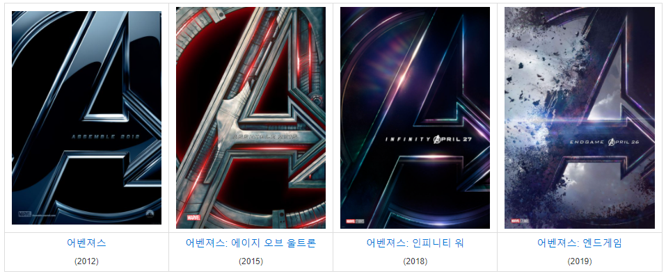

마블 코믹스의 슈퍼 히어로 집단 어벤져스의 활약을 영화화 한 시리즈. 1, 2편은 조스 웨던이, 3, 4편은 루소 형제가 감독을 맡았다. 마블 시네마틱 유니버스 최초로 4부작으로 개봉된 시리즈.[1] 한국 기준으로 1편은 2012년 4월 26일, 2편은 2015년 4월 23일, 3편은 2018년 4월 25일에 개봉하였다. 4편은 2019년 4월 24일에 개봉하였다. 케빈 파이기 피셜로 5번째 어벤져스 시리즈는 페이즈 5에 배치될 것이 밝혀졌으며 이전과는 달리 새로운 얼굴들이 다수 합류하게 될 것임이 확인되었다. 월드와이드 수익은 4편 모두 10억 달러를 돌파했는데, 특히 3편과 4편은 20억 달러를 돌파했다.[2] 4편 모두 역대 월드와이드 박스오피스 10위 안에 들어갔던 엄청난 흥행 기록을 세운 시리즈이다.
사실상 MCU 세계관에서 각 페이즈마다 한번씩 만날 수 있는 최대의 메인 이벤트이며 마블 시네마틱 유니버스의 모든 히어로들이 총출동해서 강력한 빌런들을 막는다는 내용이 중심 스토리인 만큼 지구멸망 수준의 거대한 사건이 일어난다는 것이 특징이다. 주연급 히어로들이 많이 나오는 만큼 비중 분배를 우려하는 팬들이 많았으나, 여태까지 나온 시리즈들 모두 히어로들의 비중이 적절히 잘 분배됐고, 각자의 개성도 잘 표현되었다고 평가받고 있다. 마블 시네마틱 유니버스 영화뿐만 아니라 모든 슈퍼 히어로 영화 시리즈 중에서 최고의 성적을 기록한 영화 시리즈이다.
